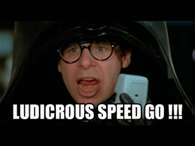

A printable PDF is available.
Homework 2 – Due Tuesday, February 6
- What is the closest power of two to
- (a) 16 million
- (b) 4 billion
- (c) number of nanoseconds in one week
- (d) number of seconds in 8 years
- This is the "extreme, over-the-top, super-secure keysize security"
estimation problem. Consider if you could convert an entire
planet into one big computer (suggestion: read The
Hitchhiker's Guide to the Galaxy if you haven't) -- look in the
table of large numbers and find how many atoms are in the Earth, and
assume that you can make a logic gate out of every 8 atoms in the
planet. Next, assume that you can clock those gates at the fastest
imaginable speed, the frequency of ultraviolet light, which would be a
1,000 THz computer, and testing a key takes at least 1000 Boolean
operations. Finally, a "super-secure" cipher is one that cannot be
brute-forced (on average) in under 128 years. What keysize would need
to be used so that a cipher is "super-secure" against attacks using
this ultra-fast full-planet computer? You can (and should!) estimate
all values as powers of two when you solve this problem.
 - Prove that if a, b, and n are positive integers, then a mod n=b mod n if and only if a == b mod n (where the first equation uses mod as an operator, and the second equation uses the equivalence relation definition of mod ).